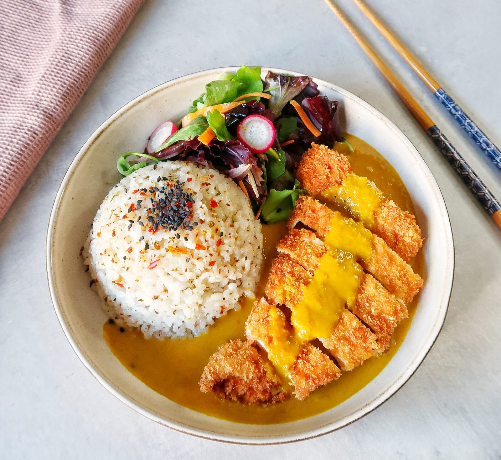

Katsu Curry

Description
Katsu curry is a Japanese dish consisting of
a pork cutlet served with a portion of japanese
rice and curry.
Ingredients
- 2-3 tbsp vegetable oil
- 1 onion
- 1 garlic clove
- 2 tsp ginger
- 1 tsp turmeric
- 1 tbsp plain flour
- 300ml chicken stock
- 100ml coconut milk
- 1 tsp light soy sauce
- 1 tsp sugar
- 2 tbsp curry powder
- 500g chicken
- panko bread crumbs
- 3 eggs
- 1 tbsp cornflour
- Rice
Steps:
- Firstly, make the curry sauce. Heat 2 tbsp oil in a pan,
cook the onions, garlic and ginger until they are
soft and start to caramelise.
- Add the curry powder and turmeric. Stir well and let
it cook for a min on low/medium heat.
- Add flour to thicken and cook for 1 min.
- Gently add the chicken stock mix with water
and stir continuously while adding the stock mix.
- When the curry starts to boil add some coconut milk
to the mix and keep stirring.
- Lastly, add some sugar and soy sauce and let it simmer
for 20 mins.
- In a wide bowl, mix the cornflour with 4 tbsp
water and some seasoning.
- Dip the chicken into the four mixture.
- Place the breadcrumbs in another bowl and dip
the chicken in it, turning until well coated.
- Heat the oil in a frying pan and cook the chicken
for 4-5 mins on each side until golden and cooked
through.